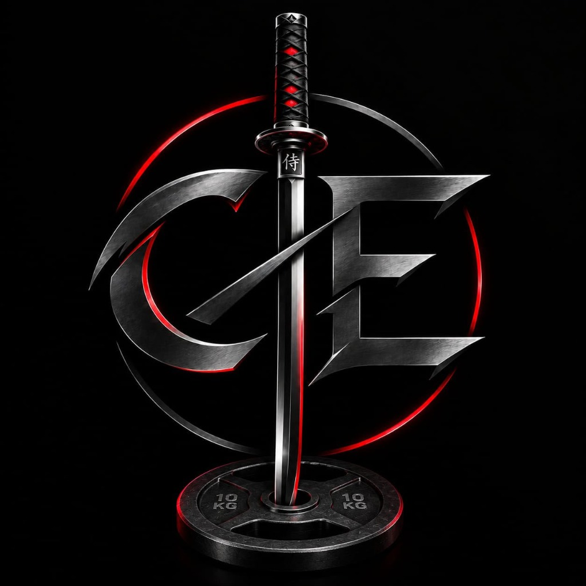

Se ha diseñado e implementado una página web estilo Link in Bio de alto rendimiento para PF Carlos Castro. El sitio combina la ligereza y rapidez de una tarjeta de presentación digital con la profundidad de un portafolio interactivo multimedia, permitiendo a los atletas y clientes contactar inmediatamente y explorar los casos de éxito de manera visual.
| Tono | Código | Rol en la Interfaz |
|---|---|---|
| Negro Carbón | #0D0D0D |
Fondo Dark Mode con micro-malla técnica de fibra de carbono. |
| Rojo Carmesí | #B80F0F |
Bordes de acento, resplandor neón (glow) y llamado a la acción principal. |
| Gris Plata Metálico | #E0E0E0 |
Tipografía primaria y degradados metálicos. |
| Acero Oscuro | #2A2A30 |
Tarjetas de contenedor, bordes secundarios e iconos en relieve. |
Alto Rendimiento • Resistencia • Trabajo Personalizado+56 9 8780 8954.@pf_carloscastro.
📁 pf-carlos-castro-bio/
├── 📄 index.html # Página web principal
├── 📄 DOCUMENTO_FINAL_PROYECTO.html # Este informe interactivo
├── 📄 DOCUMENTO_FINAL_PROYECTO.md # Informe en Markdown
├── 📄 README.md # Guía técnica rápida
└── 📁 assets/
├── 📁 css/
│ └── 🎨 styles.css # Estilos Dark Mode & Glow
├── 📁 js/
│ └── ⚡ app.js # Álbumes, Lightbox y Carga
└── 📁 images/
├── 🖼️ logo.jpg # Escudo oficial
├── 🖼️ work-1.jpg a work-6.jpg # Fotos reales de entrenamiento
Para activarlo en el perfil de Instagram:
pf-carlos-castro-bio a la ventana.https://pfcarloscastro.netlify.app) listo para agregar a la biografía de Instagram.